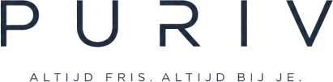
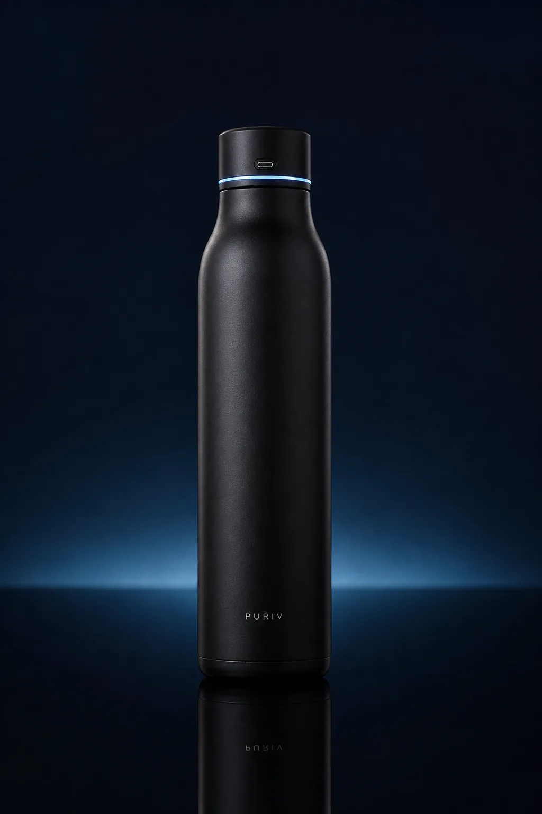
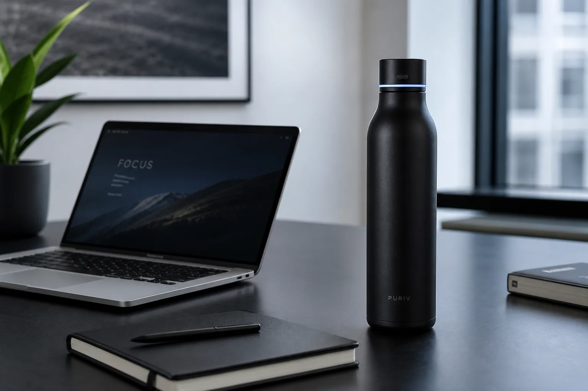
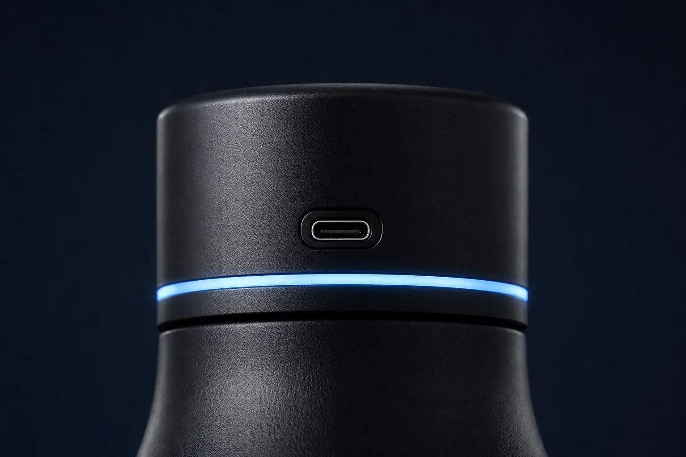
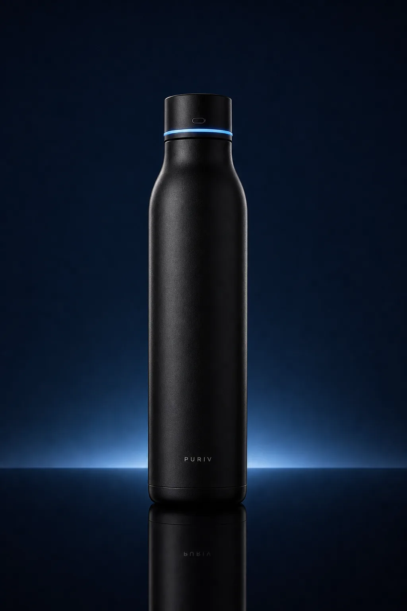

Waarom het verschil maakt
- Helpt nare geurtjes verminderen
- Gemaakt voor werk, sport en onderweg
- Stevig RVS in plaats van wegwerpplastic
- Rustig design dat past op je bureau

Bestel NuPuriv UV-C waterfles
Een premium zwarte RVS drinkfles met slimme UV-C technologie, USB-C opladen en temperatuurbehoud voor iedere dag.

Dagelijks gebruik
De UV-C functie zit subtiel verwerkt in de dop. Zo helpt Puriv de fles frisser te houden, zonder dat het product eruitziet als een gadget.
Details
Helpt de fles frisser te houden met slimme technologie in de dop.
Stevig, premium en ontworpen voor temperatuurbehoud.
Snel en eenvoudig opladen met dezelfde kabel als moderne devices.
Minimalistisch design met zachte lijnen en een luxe feel.
Houdt je drank lang koud of warm tijdens drukke dagen.
Geschikt voor werk, sport, school, reizen en in de auto.
Discrete bediening, zonder onnodige afleiding.
Ontworpen om zorgeloos mee te nemen in tas of bekerhouder.
Lifestyle

WerkdagHoe het werkt
Gebruik Puriv voor water thuis, onderweg of op kantoor.
Start de slimme UV-C functie via de dop wanneer je wilt opfrissen.
Een schonere dagelijkse routine, zonder drukke extra handelingen.
Productfilm
Gebruik hier een rustige verticale video waarin de dop, het materiaal en het opladen helder worden getoond.
Bekijk optiesKwaliteit en design
Puriv combineert slimme technologie met een minimalistisch ontwerp dat past bij werk, sport, reizen en dagelijks gebruik.

Vergelijking
FAQ
Bestellen
Kies je bundel en betaal veilig via PayPal.

Zwart model, inclusief USB-C kabel en premium verpakking
Voorwaarden
Onderstaande informatie is bedoeld als nette webshopbasis. Vul de definitieve bedrijfs-, betaal- en retourgegevens aan voordat Puriv live gaat.
Bestellingen worden zorgvuldig verwerkt en verzonden naar het opgegeven adres. Levertijden worden bij checkout of orderbevestiging gecommuniceerd.
Consumenten kunnen ongebruikte producten binnen de wettelijke bedenktijd retourneren, mits compleet, schoon en in originele staat.
Op Puriv geldt de wettelijke garantie. Dit betekent dat het product moet doen wat je er redelijkerwijs van mag verwachten.
Puriv is ontworpen voor dagelijks gebruik. Reinig de fles regelmatig en volg de productinstructies voor de UV-C dop en USB-C aansluiting.
Je order is ontvangen. We sturen een update zodra je pakket onderweg is.
Je ontvangt de track & trace zodra deze actief is.
Rond je bestelling af wanneer het jou uitkomt.
Deel je ervaring wanneer je de fles een tijdje hebt gebruikt.